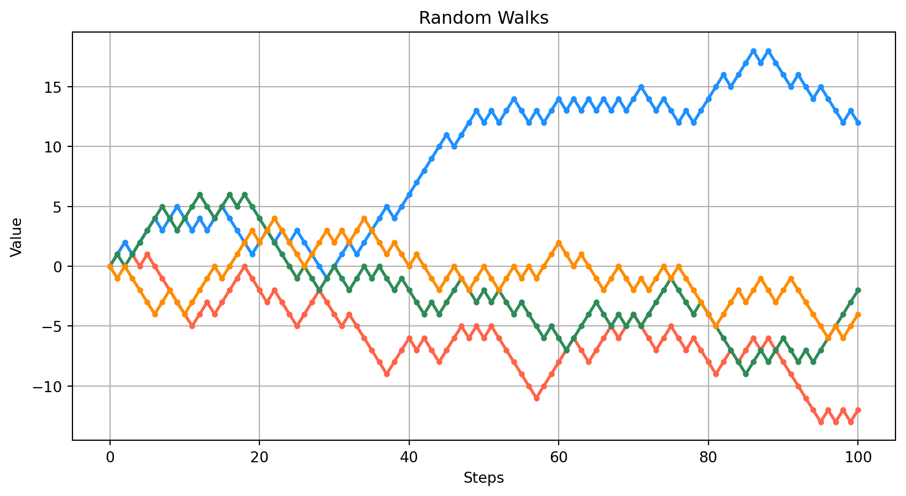
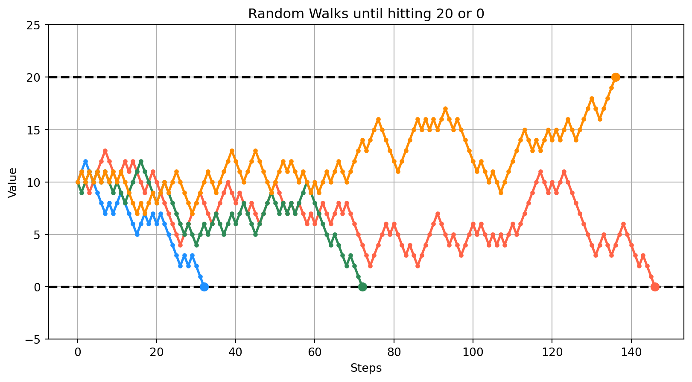
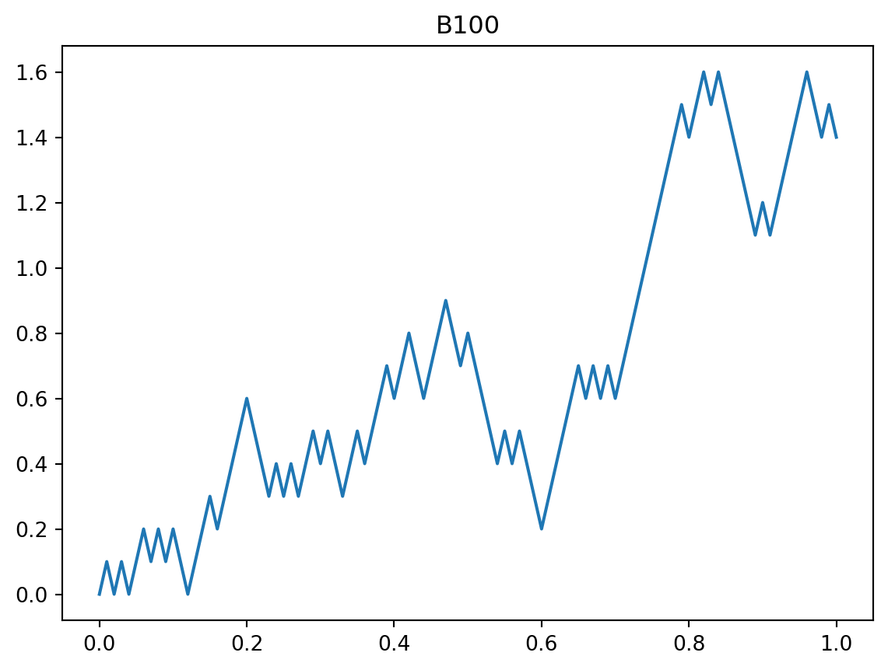
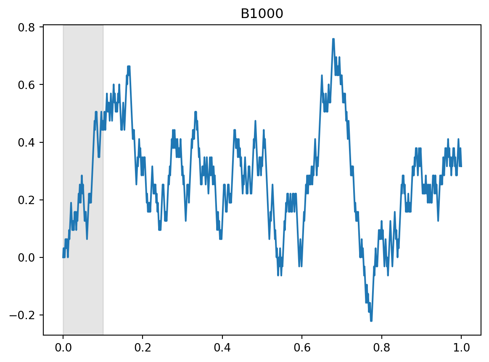
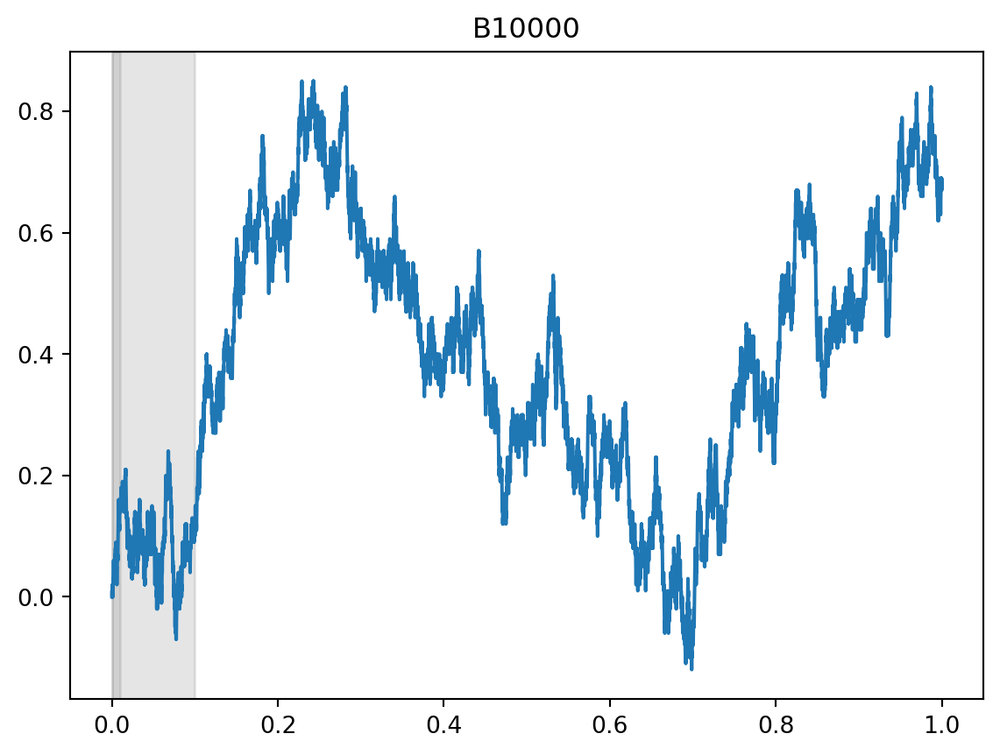
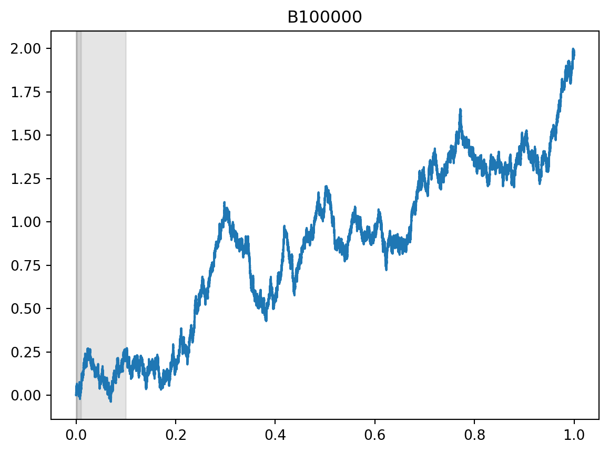
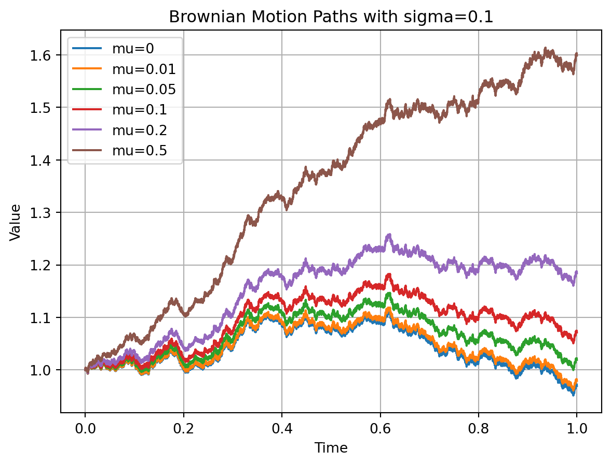
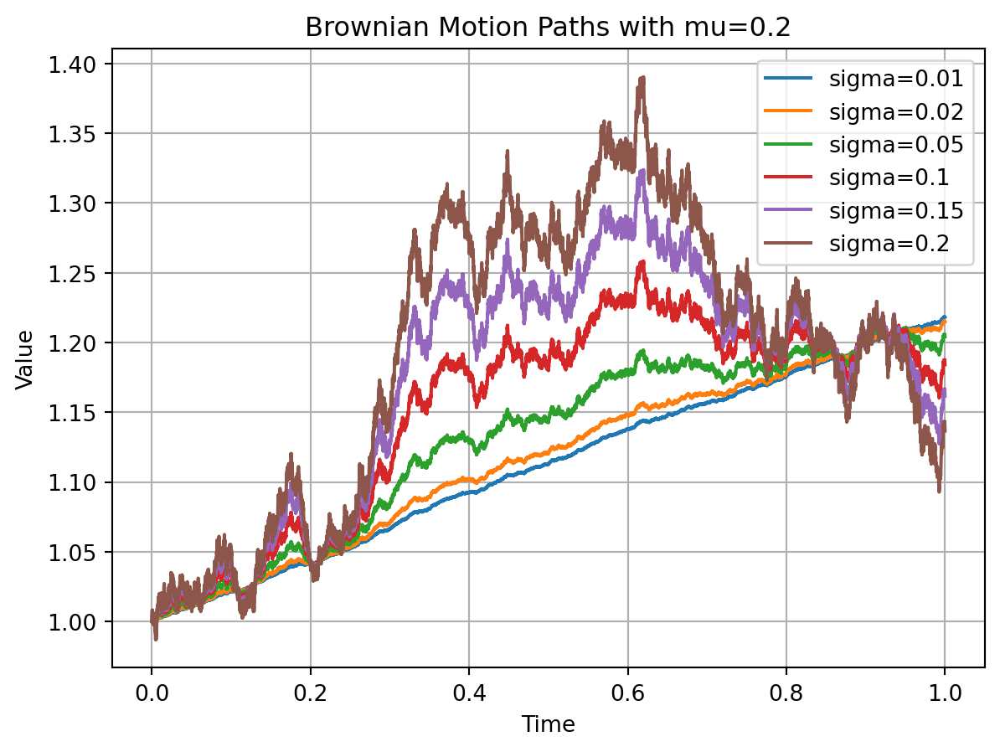

TP6: Marches Aléatoires
Le but de ce TP est de faire différentes simulations liées aux marches aléatoires.
Marche aléatoire simple symétrique
On rappelle qu’une marche aléatoire simple symétrique est une suite (S_n) telle que S_0=x est déterministe et S_{n+1}=S_n+X_{n+1}=S_0+\sum_{k=1}^{n+1}X_k où (X_n) est une suite de variables aléatoires indépendantes et de même loi donnée par \mathbb{P}(X_1=1)=\mathbb{P}(X_1=-1)=1/2.
- Construire un simulateur de marche aléatoire prenant en entrée la valeur de S_0 et un horizon de temps N et donnant en sortie la suite (S_n)_{0\leq n\leq N}
Solution
import numpy as np
def marche(x, N):
"""
Simulates a random walk.
Parameters:
x (float): Initial value.
N (int): Number of steps.
Returns:
numpy.ndarray: Array representing the random walk path.
"""
# Generate random steps (-1 or 1) with equal probability
X = np.random.choice([-1, 1], size=N, p=[0.5, 0.5])
# Calculate the cumulative sum of steps and add it to the initial value
S = x + np.cumsum(np.insert(X, 0, 0))
return S- Tracer quelques trajectoires de la marche pour x=0 et N=100.
Solution
import matplotlib.pyplot as plt
N = 100
# Generate random walks
S = [marche(0, N) for _ in range(4)]
absc = np.arange(N + 1)
colors= ['tomato', 'dodgerblue', 'seagreen', 'darkorange']
# Plot the random walks
fig, ax = plt.subplots(figsize=(10, 5))
for i, s in enumerate(S):
ax.plot(absc, s, marker='o', markersize=3, linestyle='-', linewidth=2, color=colors[i])
plt.xlabel('Steps')
plt.ylabel('Value')
plt.title('Random Walks')
plt.grid(True)
plt.show()
- Construire un simulateur du problème de la ruine de la joueuse prenant en entrée la valeur de S_0, la plafond de gain a et le plancher de perte b et donnant en sortie la suite (S_n) de l’instant n=0 au premier instant où la marche touche a ou b.
Solution
import numpy as np
def ruine(x, a, b):
"""
Simulates a random walk until it hits either a or b.
Parameters:
x (float): Initial value.
a (float): Upper limit.
b (float): Lower limit.
Returns:
numpy.ndarray: Array representing the random walk path until it hits a or b.
"""
assert (x < a) and (x > b)
S = [x]
while S[-1] > b and S[-1] < a:
step = np.random.choice([-1, 1], p=[0.5, 0.5])
S.append(S[-1] + step)
return np.array(S)Par exemple, pour simuler des trajectoires partant d’une fortune initiale de S_0 = 5 avec a=10 et b=0
print(ruine(5, 10, 0))[5 4 3 2 1 2 1 0]- Tracer quelques trajectoires du jeu pour x=10, a=20, b=0.
Solution
# Number of trajectories
num_trajectories = 4
# Plot the random walks
fig, ax = plt.subplots(figsize=(10, 5))
colors= ['tomato', 'dodgerblue', 'seagreen', 'darkorange']
a=0
b=20
ax.axhline(y=a, color='black', linestyle='--', linewidth=2)
ax.axhline(y=b, color='black', linestyle='--', linewidth=2)
# Generate and plot trajectories
for i in range(num_trajectories):
M = ruine(10, 20, 0)
ax.plot(np.arange(len(M)), M, marker='o', markersize=3, linestyle='-', linewidth=2, color=colors[i])
ax.plot(len(M)-1, M[-1], marker='o', markersize=7, linestyle='-', linewidth=2, color=colors[i])
ax.set_ylim(-5, 25)
plt.xlabel('Steps')
plt.ylabel('Value')
plt.title('Random Walks until hitting 20 or 0')
plt.grid(True)
plt.show()
- Estimer la probabilité de ruine par la méthode de Monte Carlo avec les mêmes paramètres x=10, a=20, b=0.
Solution
NMC = 1000
proba = np.zeros(NMC)
for n in range(NMC):
S = ruine(10, 20, 0)
proba[n] = (S[-1] == 0)
IN = np.mean(proba)
IC = [IN - 1.96 * np.sqrt(np.var(proba) / NMC), IN + 1.96 * np.sqrt(np.var(proba) / NMC)]
print("Estimated Probability:", IN)
print("95% Confidence Interval:", IC)Estimated Probability: 0.523
95% Confidence Interval: [0.4920424840531415, 0.5539575159468586]La valeur théorique de 1/2 est bien dans l’intervalle de confiance.
- Estimer la durée moyenne du jeu par la méthode de Monte Carlo avec les mêmes paramètres x=10, a=20, b=0.
Solution
NMC = 1000
duree = np.zeros(NMC)
for n in range(NMC):
S = ruine(10, 20, 0)
duree[n] = len(S) - 1
IN = np.mean(duree)
IC = [IN - 1.96 * np.sqrt(np.var(duree) / NMC), IN + 1.96 * np.sqrt(np.var(duree) / NMC)]
print("Estimated Duration:", IN)
print("95% Confidence Interval:", IC)Estimated Duration: 101.5
95% Confidence Interval: [96.41352923264077, 106.58647076735923]La valeur théorique de -ab+x(a+b)-x^2=100 est bien dans l’intervalle de confiance.
Mouvement brownien
On rappelle que le mouvement Brownien (B_t)_{t\in[0,1]} peut s’obtenir comme la limite de B^N_t =\frac{1}{\sqrt{N}} S_{\lfloor Nt \rfloor} = \frac{1}{\sqrt{N}} \sum_{k=1}^{\lfloor Nt \rfloor} X_k. lorsque N tend vers l’infini, où (S_n) est une marche aléatoire simple symétrique telle que S_0=0.
- Simuler une marche aléatoire (S_n) à 100\ 000. En utilisant les N premières coordonnées de cette marche, tracer une trajectoire de B^N sur [0,1] pour N=100, N=1\ 000, N=10\ 000 et N=100\ 000. Commenter.
Solution
# Generate a random walk with 100,000 steps
S = marche(0, 100000)
# Plot B100
B100 = S[:101] / np.sqrt(100)
plt.plot(np.linspace(0, 1, 101), B100)
plt.title('B100')
plt.show()
# Plot B1000
B1000 = S[:1001] / np.sqrt(1000)
plt.plot(np.linspace(0, 1, 1001), B1000)
plt.title('B1000')
plt.axvspan(0, 0.1, color='gray', alpha=0.2)
plt.show()
# Plot B10000
B10000 = S[:10001] / np.sqrt(10000)
plt.plot(np.linspace(0, 1, 10001), B10000)
plt.title('B10000')
plt.axvspan(0, 0.01, color='gray', alpha=0.2)
plt.axvspan(0, 0.1, color='gray', alpha=0.2)
plt.show()
# Plot B
B = S / np.sqrt(100000)
plt.plot(np.linspace(0, 1, 100001), B)
plt.title('B100000')
plt.axvspan(0, 0.001, color='gray', alpha=0.2)
plt.axvspan(0, 0.01, color='gray', alpha=0.2)
plt.axvspan(0, 0.1, color='gray', alpha=0.2)
plt.show()



On voit dans chaque graphique que les premiers 10\% de la trajectoire correspondent à la trajectoire précédente compressée (zones grisées). Le caractère discret est bien visible sur les deux premières trajectoires, puis on ne le distingue plus à l’œil sur les dernières.
Un modèle de processus plus avancé
On veut simuler les trajectoires d’un actif risqué (S_t)_{0\leq t\leq 1} suivant le modèle de Black et Scholes. Sa dynamique est définie de la façon suivante S_t=\exp\big(\mu t-\frac{\sigma^2}{2}t+\sigma B_t\big),\qquad 0\leq t\leq1. Le paramètre \mu s’appelle la dérive et le paramètre \sigma la volatilité. Pour simuler (S_t) on va utiliser le simulateur de mouvement Brownien de la question précédente.
- Simuler une trajectoire du mouvement Brownien avec un pas de discrétisation de N=10\ 000. En utilisant uniquement ce même tirage pour tous jeux de paramètres, tracer sur un même graphique les trajectoires d’un actif risqué (S_t)_{0\leq t\leq 1} qui évolue suivant le modèle de Black et Scholes pour chacun des jeux de paramètres suivants:
\sigma=10\% et \mu=0\%, \mu=1\%, \mu=5\%, \mu=10\%, \mu=20\%, \mu=50\%.
\mu=20\% et \sigma=1\%, \sigma=2\%, \sigma=5\%, \sigma=10\%, \sigma=15\%, \sigma=20\%
Solution
# Generate a random walk with 10,000 steps
S = marche(0, 10000)
# Calculate the scaled random walk
B = S / np.sqrt(10000)# Define parameters
sigma = 0.1
mu_values = [0, 0.01, 0.05, 0.1, 0.2, 0.5]
time = np.linspace(0, 1, 10001)
# Calculate Brownian motion paths with different mu values
BS_m = []
for mu in mu_values:
BS_m.append(np.exp((mu - sigma**2 / 2) * time + sigma * B))
# Plot Brownian motion paths
plt.figure()
for i, mu in enumerate(mu_values):
plt.plot(time, BS_m[i], label=f'mu={mu}')
plt.title(f'Brownian Motion Paths with sigma={sigma}')
plt.xlabel('Time')
plt.ylabel('Value')
plt.legend()
plt.grid(True)
plt.show()
Solution
Deuxième jeux de paramètres
# Define parameters
mu = 0.2
sigma_values = [0.01, 0.02, 0.05, 0.1, 0.15, 0.2]
time = np.linspace(0, 1, 10001)
# Calculate Brownian motion paths with different mu values
BS_s = []
for sigma in sigma_values:
BS_s.append(np.exp((mu - sigma**2 / 2) * time + sigma * B))
# Plot Brownian motion paths
plt.figure()
for i, sigma in enumerate(sigma_values):
plt.plot(time, BS_s[i], label=f'sigma={sigma}')
plt.title(f'Brownian Motion Paths with mu={mu}')
plt.xlabel('Time')
plt.ylabel('Value')
plt.legend()
plt.grid(True)
plt.show()
- Quel est l’effet des changements de dérive et de volatilité sur l’aspect des trajectoires? Comment l’expliquer ?
Solution
On constate que la dérive correspond à la “pente” de la trajectoire : plus elle est élevée, plus la trajectoire monte, sans influencer les fluctuations. La volatilité correspond à l’intensité de fluctuations, plus elle est élevée, plus les fluctuations à la hausse où à la baisse sont importantes.